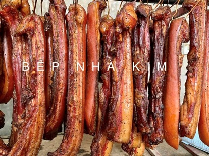
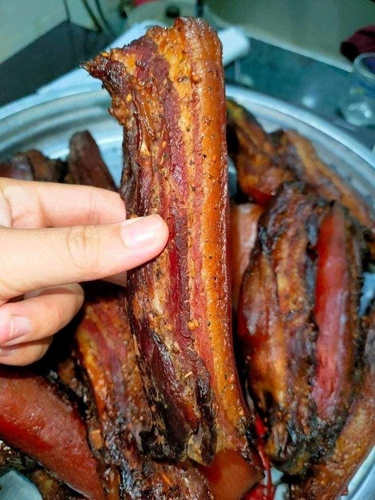
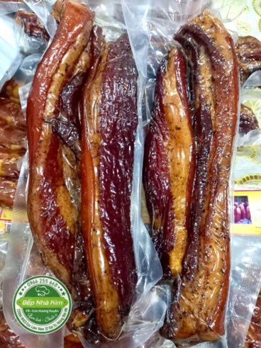
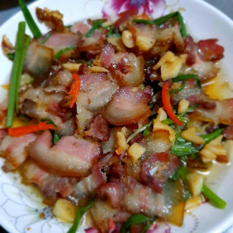

Thịt heo hun khói
Khi điều kiện sống đã tốt lên, thực phẩm không còn thiếu thốn, thì những món cổ truyền xưa kia của núi rừng Tây Bắc lại trở thành đặc sản đậm chất quê hương. Tất nhiên, với chất đất, khí hậu tự nhiên khác nhau, sử dụng phương thức tẩm ướp khác nhau và gia vị khác nhau, cũng là thịt hun khói sấy khô gác bếp nhưng vị rất khác nhau. Thịt hun khói Cao Bằng cũng vậy, có những đặc trưng mùi vị riêng truyền thống mà dân sành ăn, điệu nghệ mới hiểu hết được.
Thông thường người ta chỉ dùng thịt lợn ba chỉ, đôi khi là thịt mông, vai. Các món ăn được chế biến từ thịt lợn hun khói ngon hơn so với các loại thịt lợn không treo nóc bếp, miếng thịt chắc, không bị nát, có mùi thơm rất đặc trưng.
Hiện nay ở vùng núi phía bắc nước ta, món thịt lợn hun khói đã trở thành món ẩm thực không thể thiếu trong các gia đình người Mường, Thái, Mông, Tày… vào ngày Tết, hầu như nhà nào cũng có thịt treo nóc bếp. Thịt lợn hun khói thì miếng thịt gần như đã chín từ bên trong, người dân chỉ việc sơ chế qua là có thể dùng được luôn. Khi thưởng thức có vị ngọt rất thơm ngon và không “ngấy” và rất vào “tất nhiên là nhậu” rồi.
Cách chế biến món Thịt hun khói trải qua nhiều công đoạn, được làm bằng thịt thăn, thịt vai hoặc thịt mông lợn. Để thịt hun khói ngon, khâu chọn thịt vô cùng quan trọng. Thịt lợn phải có màu đỏ thẫm, mỡ trắng trong, bóng, bì mỏng và một màu.
Thịt được chọn từ lúc còn nóng (lợn vừa mổ). Tất cả được rửa bằng nước muối loãng, thái miếng theo từng thớ đẹp mắt và tẩm ướp gia vị, cùng chút rượu để làm chất lên men. Công đoạn tiếp theo là phơi khô khoảng ba nắng rồi treo lên nóc bếp, khói và hơi nóng của bếp lửa đun bằng bã mía làm cho miếng thịt săn hơn và ngon hơn. thịt hun khói được tẩm ướp để đủ 24 tiếng mới treo vào lò (để lửa nhỏ), sấy và hun khói liên tục 2 ngày 2 đêm (đối với miếng thịt mỏng), 3 ngày 3 đêm (đối với miếng thịt dày). Đây là công đoạn làm như cho thở xa xưa, khi ông cha ta phải gác thịt gác bếp để dành trong ngày đông tháng giá.